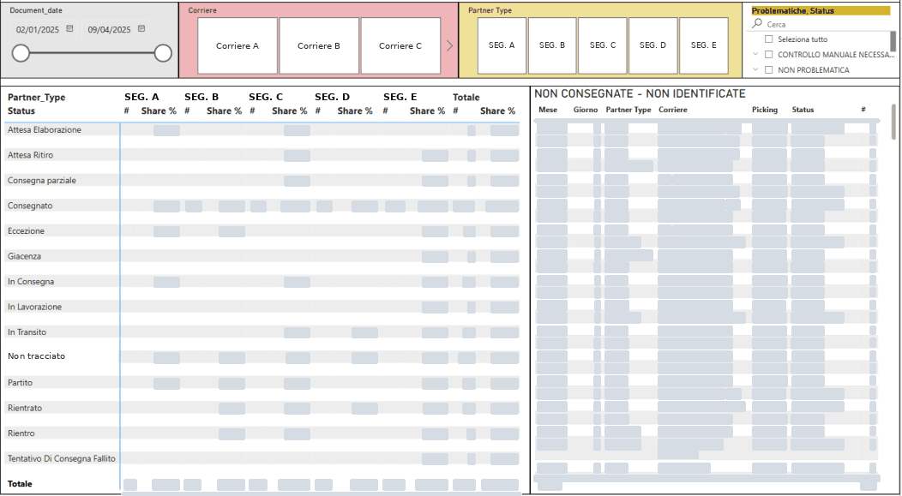
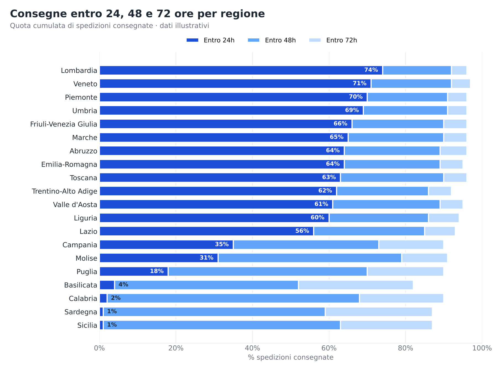
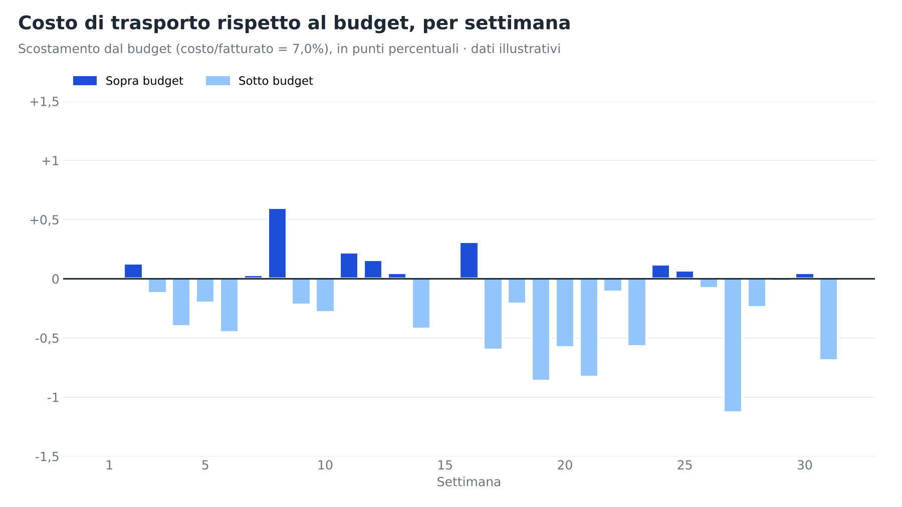

Il problema
Il reparto trasporti non aveva un sistema di misura: esistevano solo statistiche parziali e poco affidabili.
Performance di consegna e costi di trasporto erano sparsi in fonti diverse. Era difficile capire dove le spedizioni fallivano, quali regioni e corrieri rendevano meno e come si muovevano i costi di trasporto rispetto a fatturato e budget.
I ritardi di consegna erano un punto cieco: alcune spedizioni non risultavano nemmeno nel sistema di tracking.
La soluzione
Di mia iniziativa ho progettato e costruito da zero un sistema di analisi logistica, poi sviluppato in quattro edizioni annuali (2022-2025), ognuna adattata a corrieri, servizi e priorità dell'anno. Copre circa 400.000 spedizioni l'anno.
Una pipeline a più livelli alimenta i report Power BI:
Cosa comprende la soluzione



Risultati
- Un reparto senza misure affidabili è passato a un controllo completo e aggiornato
- Performance di consegna, efficienza dei corrieri e costi in un unico posto
- Divari territoriali resi evidenti: la quota di consegne in 24 ore va da oltre il 70% nelle regioni migliori a quasi zero in quelle più lontane, con dettaglio per provincia
- Aree critiche evidenziate con formattazione condizionale e drill-down
- Costi di trasporto confrontati con fatturato, budget e anno precedente
- Ritardi e spedizioni non tracciate resi visibili e verificabili
Stack
Nomi dei clienti e dati riservati sono stati omessi. Le immagini in questa pagina non contengono dati di clienti; i grafici ricreati usano dati illustrativi.